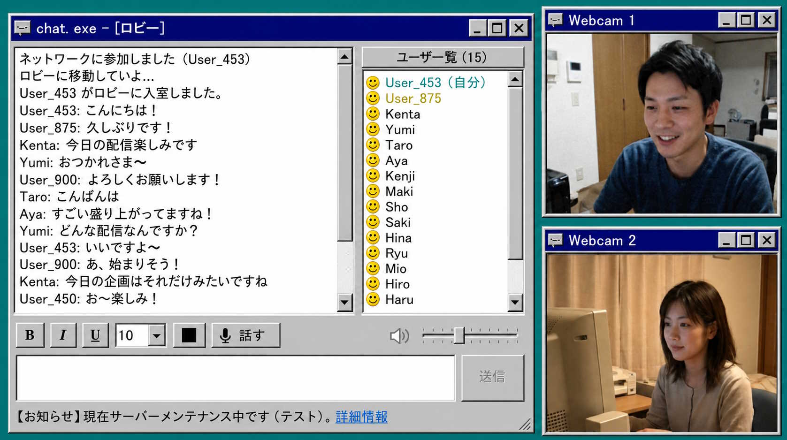

歡迎來到 chat.exe 官方發布網站
慶祝今日首發！踩中幸運數字請留言！當前版本為 v1.0.0。
■ 應用簡介
網際網路的原始風貌就在這裡。
融合了 Windows 95/98 復古 UI 與現代即時通訊的全新聊天應用！
沒有「按讚」，沒有「追蹤」，沒有廣告，沒有推薦演算法，也不會被 AI 抓取學習。重現那個無法與任何人攀比、純粹而樸素的「網際網路」氛圍。
「chat.exe」 是一款令人回想起昔日電腦通訊時代經典設計的通訊應用程式。在採用懷舊的灰色視窗和粗獷按鈕的同時，完全涵蓋了不僅是文字聊天，還包括「視訊通話」、「螢幕分享」、「語音通話」等現代功能。
雖然外觀復古，但後台運作的影音壓縮通訊技術已經使用現代最新技術（如 H.264 硬體編碼和 Opus 音訊編解碼器等）完全重建，實現了與外觀截然相反的高品質、極度流暢的通訊。

■ 主要功能與使用方法
|
✨ 復古情懷 UI 致敬當年作業系統的懷舊設計。沒有多餘裝飾的經典視窗，讓心情瞬間高漲。 🎥 視訊＆語音通話・螢幕分享 不僅支援文字，標配支援使用網路攝影機和麥克風進行通話，以及電腦螢幕分享。 |
🎨 自由的文字裝飾 支援粗體、斜體、更改文字顏色和大小等，讓你可以用自己的方式展現昔日熱鬧聊天室的氛圍。 🚀 極速反應 告別臃腫的通話應用程式。採用 C++ 原生開發，將冗餘精簡到極致的超輕量級設計。 |
■ 系統需求
- OS: Windows 10 / 11 (僅限64位元)
- CPU: Intel Core i3 或以上
- 記憶體: 4GB或以上
- 其他: 需要網際網路連線，網路攝影機・麥克風（使用視訊通話時）
■ 隱私權政策
本應用程式使用經過伺服器的即時通訊，但開發者的伺服器不會永久保存或收集通話內容、視訊畫面以及聊天記錄。此外，本應用程式包含防垃圾訊息功能。
您是第 位訪客。
Copyright (C) 2026 chat.exe 開發團隊 All Rights Reserved.